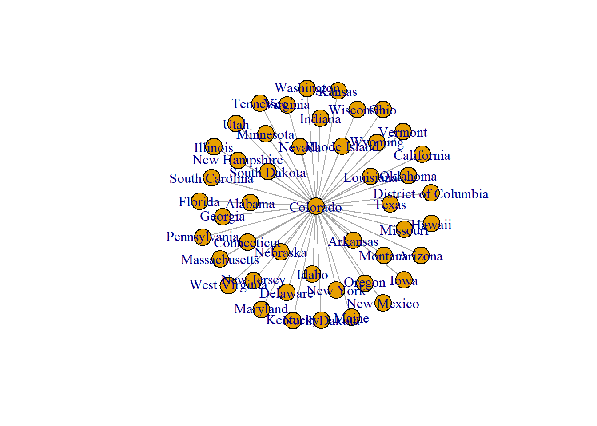
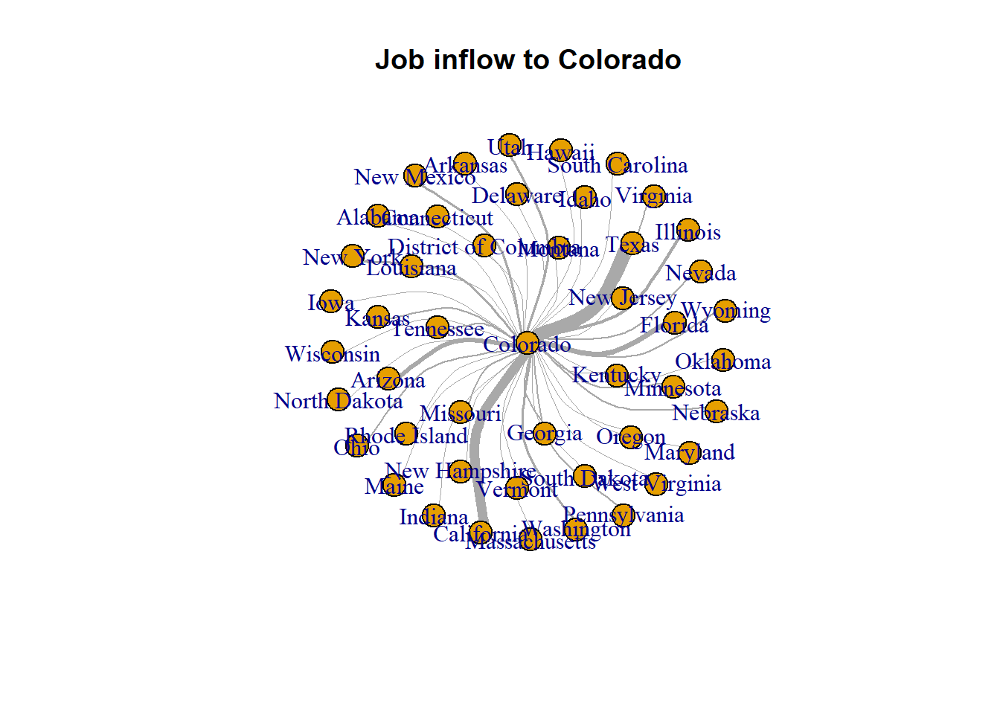
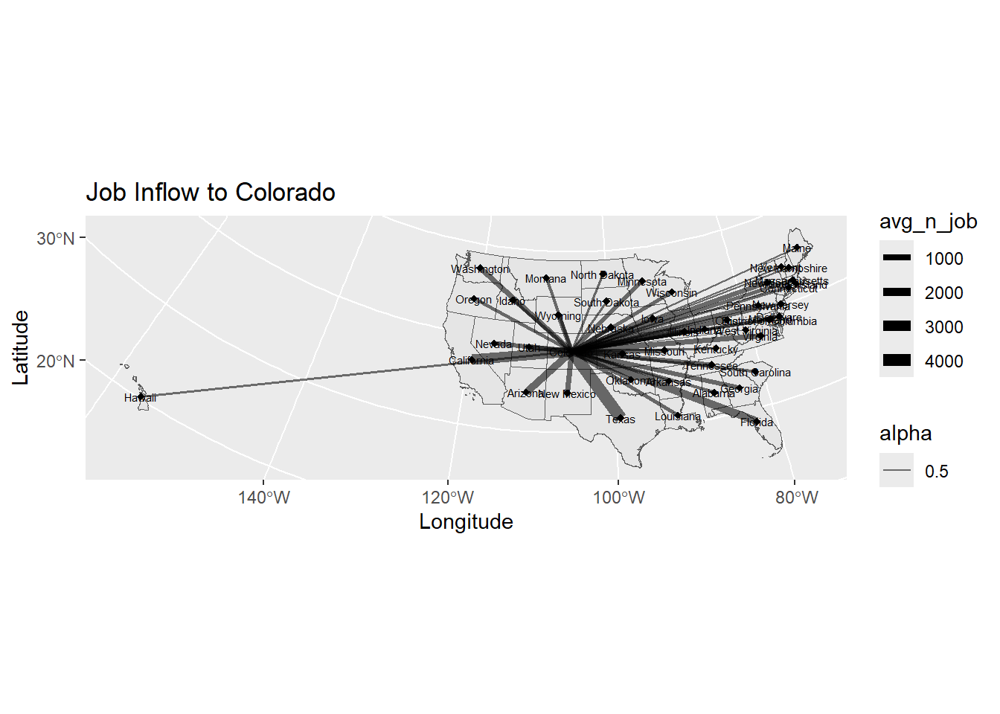

In this chapter, you will learn
Under the course folder, please create a folder called “lab7”. Next, in the lab7 folder, please create two sub-folders that one is called “data” and another one is “plot”.
This chapter explores the Longitudinal Employer-Household Dynamics data from US Census. Particularly, we will play with the Job-to-Job Flows (J2J).
Job-to-Job Flows (J2J) is a set of statistics on job mobility in the United States. J2J include statistics on:
- the job-to-job transition rate,
- hires and separations to and from employment,
- earnings changes due to job change, and
- characteristics of origin and destination jobs for job-to-job transitions.
These statistics are available at the national, state, and metropolitan area levels and by worker and firm characteristics.
Heads-Up!
You would need to use Job-to-Job Flows (J2J) for Assignment 3.
Please follow the steps below to download data, unzip it and move the data to the required folder.
If there you have any questions about the above-mentioned steps, please refer to Chapter 3.2.3 for detailed instructions.
Again, we would like to start a new project from scratch with a clean R Script. Please do the following steps. If you have any questions about these steps, please refer to the relevant chapters for help.
Heads-Up!
All scripts are non-copyable. Lab questions are at the end of this tutorial.
# Library ----
library(dplyr)
library(data.table)
library(sf)
library(tidyverse)
library(forcats) # Reorder factor levels
library(igraph) # network object
library(randomcoloR) # random color generator# US Census Cartographic Boundaries: US States (simple features)
sf_us_state <- st_read("data/cb_2023_us_state/cb_2023_us_state_5m.shp")## Reading layer `cb_2023_us_state_5m' from data source
## `D:\OneDrive\UCCS\Teaching\GES4070\Labs\01_git_wk\uccs_geoviz\data\cb_2023_us_state\cb_2023_us_state_5m.shp'
## using driver `ESRI Shapefile'
## Simple feature collection with 56 features and 9 fields
## Geometry type: MULTIPOLYGON
## Dimension: XY
## Bounding box: xmin: -179.1473 ymin: -14.55255 xmax: 179.7785 ymax: 71.35256
## Geodetic CRS: NAD83# Job-to-job flow (j2j) ----
### metadata: request info
j2j_meta_info <- read.csv("data/job_to_job_FROM_Colorado/request_info.csv")
### metadata: state
j2j_meta_state <- read.csv("data/job_to_job_FROM_Colorado/labels_state.csv")
### metadata: North American Industry Classification System (NAICS) code
j2j_meta_naics <- read.csv("data/job_to_job_FROM_Colorado/labels_naics2_orig.csv")
### flows: separations from COLORADO
j2j_from_co <- read.csv("data/job_to_job_FROM_Colorado/table.csv")
### flows: hires to COLORADO
j2j_to_co <- read.csv("data/job_to_job_TO_Colorado/table.csv")### metadata of the request info.
### scroll down. flags, Year/Quarter: 2023 Q1; 2023 Q2; 2023 Q3
View(j2j_meta_info)
### metadata of state
View(j2j_meta_state)
### metadata of NAICS Sectors
View(j2j_meta_naics)### j2j_from_co: What states do workers move to? search '.flag'
View(j2j_from_co)
### data frame shape: 20 obs. 101 variables
str(j2j_from_co)### tidy the data
j2j_from_co_cln <- j2j_from_co %>%
pivot_longer(cols = 2:ncol(j2j_from_co),
names_to = "to_state", values_to = "avg_n_job")#### remove the record with ".flag". "!"; %like% operator. find names containing the pattern ".flag"
j2j_from_co_cln <- j2j_from_co_cln %>%
filter(!to_state %like% ".flag")
#### remove missing values (na - not available)
j2j_from_co_cln <- j2j_from_co_cln %>% na.omit()
#### update first column name from "X" to "naics_sector"
setnames(j2j_from_co_cln, old="X", new="naics_sector")
#### add a new column indicating the origin state of job flow
j2j_from_co_cln$from_state <- "Colorado"
#### add a new column showing flow director
j2j_from_co_cln$direction <- "outflow_from_co"
#### correct state names by replacing dot "." with space " "
j2j_from_co_cln$to_state <- gsub("\\.", " " ,j2j_from_co_cln$to_state )#### re-order columns
j2j_from_co_cln <- j2j_from_co_cln[c("from_state", "to_state",
"direction", "naics_sector", "avg_n_job")]plot: job outflow from Colorado by industry
##### data preparation
data <- j2j_from_co_cln
#### box plot, reorder by median
ggplot(data = data, aes(x = reorder(naics_sector, avg_n_job),
y=avg_n_job, fill =naics_sector )) +
geom_boxplot() +
xlab("NAICS Sector") +
ylab("Job Counts") +
ggtitle("2023 Q1-Q3 Quaterly Average Job Outflow from Colorado") +
theme(legend.position = "none",
axis.text.x = element_text(angle = 30, vjust = 1, hjust=1)) Use the pipe operator %>% to chain functions
together.
### tidy data; remove records with ".flag" suffix, remove na
j2j_to_co_cln <- j2j_to_co %>%
pivot_longer(cols = 2:ncol(.),
names_to = "naics_sector", values_to = "avg_n_job" ) %>%
filter(!naics_sector %like% ".flag") %>%
na.omit() %>%
setnames(old="X", new="from_state") %>%
mutate(to_state = "Colorado", direction="inflow_to_co") %>%
select(from_state, to_state, direction, naics_sector, avg_n_job)Correct naics names. Hint: the code below is copyable.
j2j_to_co_cln$naics_sector <- j2j_to_co_cln$naics_sector %>%
gsub("\\.\\.", ", ", .) %>%
gsub("\\.", " ", .) %>%
gsub("Other Services, except Public Administration",
"Other Services (except Public Administration)", .) %>%
gsub("^\\s+|\\s+$", "", .)##### data preparation
data <- j2j_to_co_cln
#### box plot, reorder by median
ggplot(data = data,
aes(x = reorder(naics_sector, avg_n_job),
y=avg_n_job,
fill =naics_sector )) +
geom_boxplot() +
xlab("NAICS Sector") +
ylab("Job Counts") +
ggtitle("2023 Q1-Q3 Quaterly Average Job Inflow to Colorado") +
theme(legend.position = "none",
axis.text.x = element_text(angle = 30, vjust = 1, hjust=1)) ### combine inflow & outflow dataframe together
j2j_co_bysector <- rbind(j2j_from_co_cln, j2j_to_co_cln)
### combine all sectors together
j2j_co_aggsector <- aggregate(avg_n_job ~ from_state + to_state + direction,
data = j2j_co_bysector %>% select(-naics_sector),
FUN = sum)
j2j_co_aggsector$naics_sector <- "all_sectors"
### Final data
j2j_co <- rbind(j2j_co_aggsector, j2j_co_bysector)### list of unique states in j2j_co
lt_state <- unique(c(j2j_co$from_state, j2j_co$to_state))
### list of unique naics sectors in j2j_co
lt_sector <- unique(j2j_co$naics_sector)### visualize job inflow network
data <- j2j_co %>% filter(naics_sector == "all_sectors",
direction == "inflow_to_co")
# Create a network object
network <- graph_from_data_frame(d=data, directed=F)
# Network summary
summary(network)## IGRAPH 23fb2a3 UN-- 47 46 --
## + attr: name (v/c), direction (e/c), avg_n_job (e/n), naics_sector
## | (e/c)Quick plot of network
plot(network)
Improve network viz.
plot(network, vertex.size = 12,
edge.arrow.size = 0.5,
edge.width=E(network)$avg_n_job * 0.002,
edge.curved = TRUE, main = "Job inflow to Colorado")
#### project to sf_us_state to CRS NAD83 / Colorado North (ftUS)
sf_us_state_j2j <- sf_us_state %>%
filter(NAME %in% lt_state) %>% st_transform(., 2231)#### get state centroid
df_node <- sf_us_state_j2j %>% select(NAME) %>% st_centroid()
#### split point data into lat & long
df_node <- df_node %>% mutate( long = unlist(map(df_node$geometry, 1)),
lat = unlist(map(df_node$geometry, 2)))
st_geometry(df_node) <- NULL#### join coordinates to edge
j2j_co_xy <- j2j_co %>%
left_join(., df_node, by=c("from_state"="NAME")) %>%
setnames(old=c("long","lat"), new=c("long_start","lat_start")) %>%
left_join(., df_node, by=c("to_state"="NAME")) %>%
setnames(old=c("long","lat"), new=c("long_end","lat_end"))#### filter data
data <- j2j_co_xy %>% filter(direction == "inflow_to_co",
naics_sector == "all_sectors")
#### plot
ggplot(sf_us_state_j2j) +
geom_sf() +
geom_segment(data = data,
aes(x = long_start, y = lat_start,
xend = long_end, yend = lat_end,
size = avg_n_job, alpha = 0.5)) +
scale_size_continuous(range = c(0.1, 3)) +
geom_point(data =df_node , aes(x = long, y = lat),
shape = 18, fill = "white",
color = 'black', stroke = 0.5) +
geom_text(data =df_node,
aes(x = long, y = lat, label = NAME),
size=2) +
ggtitle("Job Inflow to Colorado") +
ylab("Latitude") +
xlab("Longitude")
### create a function to plot job outflow by sectors
map_j2j <- function(idx, full_data, state_boundary, state_point,
c_direction, c_sector, edge_color){
data <- full_data %>% filter(direction == as.character(c_direction),
naics_sector == as.character(c_sector))
title <- paste("Job-to-job", as.character(c_direction),
as.character(c_sector), sep=" ")
p <- ggplot(state_boundary) +
geom_sf() +
geom_segment(data = data,
aes(x = long_start, y = lat_start,
xend = long_end, yend = lat_end,
size = avg_n_job, alpha = 0.5),
colour = edge_color) +
scale_size_continuous(range = c(0.01, 4)) +
geom_point(data =state_point , aes(x = long, y = lat),
shape = 18, fill = "white",
color = 'black', stroke = 0.5) +
geom_text(data =state_point,
aes(x = long, y = lat, label = NAME),
size=2) +
ggtitle(title) +
theme_bw() +
ylab("Latitude") +
xlab("Longitude")
pdf(sprintf("plot/p%s_%s.pdf", idx, title), width = 10, height = 5)
print(p)
dev.off()
}Mapping job outflow by industry
### random color set
n <- length(lt_sector)
col_random <- randomColor(n)
### map
for (i in 1:length(lt_sector)) {
edge_color = col_random[[i]]
sector_toviz <- lt_sector[[i]]
map_j2j(i, j2j_co_xy, sf_us_state_j2j, df_node, "outflow_from_co",
sector_toviz, edge_color)
}[Q1] Please list 3-5 functions that
you have learnt from this tutorial and explain when and how to use them.
Hint: a function is an object followed by
(). For example, left_join(),
str() are functions.
[Q2] Please open the plot folder,
you should be able to see 21 plots. Please pick 2 plots
to discuss your findings. Hint: the data frame
j2j_co contains the original data of the plots.
[Q3] Have a look at the map p1_Job-to-job outflow_from_co all_sectors.pdf, how would you like to improve it?
Congratulations!! You have completed the entire tutorial and learnt the intro to network visualization!! Excellent work.
Please go “File”–> “Close Project” – a pop window asking “Do you want to save these changes” –> “Yes”.
Don’t forget to submit the lab7 report and your script to Canvas.